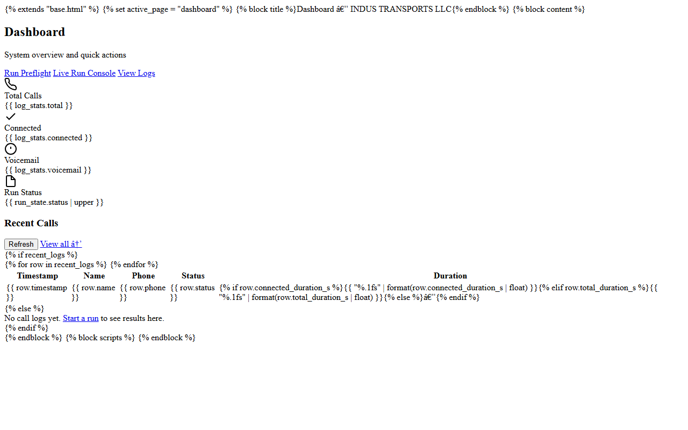

Can you build an AI agent that makes outbound calls?
Yes. google-voice-dispatch-agent is a public example: it dials through Google Voice, waits for confirmed answer evidence, then runs a speech-to-text, LLM and text-to-speech loop.
Home / Services / AI Call Agents & Call Auditing
I build AI voice agents that place and handle calls, and tools that transcribe and review recorded calls. The projects below are public on GitHub with their architecture documented in the README.

AI voice demos that talk over a ringtone or a voicemail greeting
Managers who can only review a small sample of recorded calls
No transcripts or searchable call logs
Outbound calling with no audit trail of what the agent did and why
Python AI outbound calling agent on Google Voice: conservative call-state gate, realtime VAD → Groq STT → Groq LLM → Edge TTS loop, voicemail classifier, FastAPI operator console, CRM logging, pytest suite.
AI call-auditing SaaS: transcription, quality scoring and a review workflow. Next.js, Prisma, OpenAI SDK.
Manifest V3 extension that detects Google Voice call state with live tab-audio metrics.
Write-up of the call-state detection design.
I don't publish client names, call volumes or results I can't show. The repositories and Chrome Web Store listings are the public record.
Yes. google-voice-dispatch-agent is a public example: it dials through Google Voice, waits for confirmed answer evidence, then runs a speech-to-text, LLM and text-to-speech loop.
My published call agent uses Groq for speech-to-text and replies with Edge TTS for voice; CallAudit-X uses the OpenAI SDK. The provider can be chosen per project.
CallAudit-X is built for that: transcription, quality scoring and a review workflow. How scoring rules are set would depend on your process.
It requires a minimum ring time and stable connected evidence before speaking, and an audio classifier checks the early part of the call for voicemail signals.
Pricing depends on scope - contact me with what you need and I'll reply with questions before any estimate.